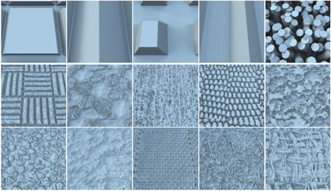

One major shortcoming of existing bi-scale material design
systems is the lack of support for inverse design: there is no
way to directly edit the large-scale appearance and then rapidly
solve for the small-scale details that approximate that look.
Prior work is either too slow to provide quick feedback, or
limited in the types of small-scale details that can be handled.
We present a novel computational framework for inverse bi-scale
material design. The key idea is to convert the challenging
inverse appearance computation into efficient search in two
precomputed large libraries: one including a wide range of
measured and analytical materials, and the other procedurally
generated and height-map-based geometries. We demonstrate a
variety of editing operations, including finding visually
equivalent details that produce similar large-scale appearance,
which can be useful in applications such as physical fabrication
of materials.
Paper(.PDF)
[Hi-res, 15.3MB] [Low-res,
0.8MB]
Bibtex [.TXT]
Video [Vimeo
HD] [.MP4, 46.2MB]
SIGGRAPH Asia Presentation Slides
[.PPSX]
(for Constructing Small-scale Geometries)

We now make public a database of height-maps, which
are used to populate our small-scale geometry library. The
database consists of a wide variety (total number 33K) of
gray-scale image patches of 128x128, whose low-frequency signals
are removed to make it more suitable as a tilable structure.
These images can be directly converted to 3D geometries, by
applying different amplitudes.
We hope that our height-map database could be useful to both
computer graphics and computer vision research, where a large
number of small-scale geometries are needed.
The database is free for academic use. The only
requirement we ask is to cite the Inverse Bi-scale Material
Design paper in your publication that uses our data. Please
email me using a title that starts with "[Height-map
Database]" to apply for downloading the database. In the email,
it would be good to include your name, affiliation and a rough
plan about how to use the database.